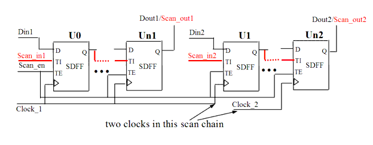

| Description | This rule fires when Leda detects more than one clock used for a scan chain. Using a single clock for each scan chain improves performance during scan insertion and timing analysis. |
| Policy | DESIGN |
| Ruleset | DFT |
| Language | VHDL/Verilog |
| Type | Hardware |
| Severity | Error |
This is an example of invalid Verilog code, followed by a circuit diagram that illustrates the problem:
module ntl_dft12_top(Clock1, Clock2, Scan_en, Scan_in1, Scan_in2, Din,
Dout1, Dout2);
input Clock1, Clock2, Scan_en, Scan_in1, Scan_in2, Din;
output Dout1, Dout2;
reg net_1, net_2, net_3, net_4;
// Scan DFF - SDFF
//scan chain 1: Scan_in1 -> Dout1, one scan clock of Clock1 in this scan
chain
SDFF U0(.D(Din1), .CP(Clock1), .TI(Scan_in1), .TE(Scan_en), .Q(net_1));
SDFF U1(.D(net_1), .CP(Clock1), .TI(net_1), .TE(Scan_en), .Q(net_2));
SDFF U2(.D(net_2), .CP(Clock1), .TI(net_2), .TE(Scan_en), .Q(Dout1));
// NTL_DFT14 fires -- Scan chain 2 Scan_in2 -> Dout2, but two scan
// clocks in this given scan chain
SDFF U3(.D(Din2), .CP(Clock1), .TI(Scan_in2), .TE(Scan_en), .Q(net_3));
SDFF U4(.D(net_3), .CP(Clock2), .TI(net_3), .TE(Scan_en), .Q(net_4));
SDFF U5(.D(net_4), .CP(Clock2), .TI(net_4), .TE(Scan_en), .Q(Dout2));
endmodule
